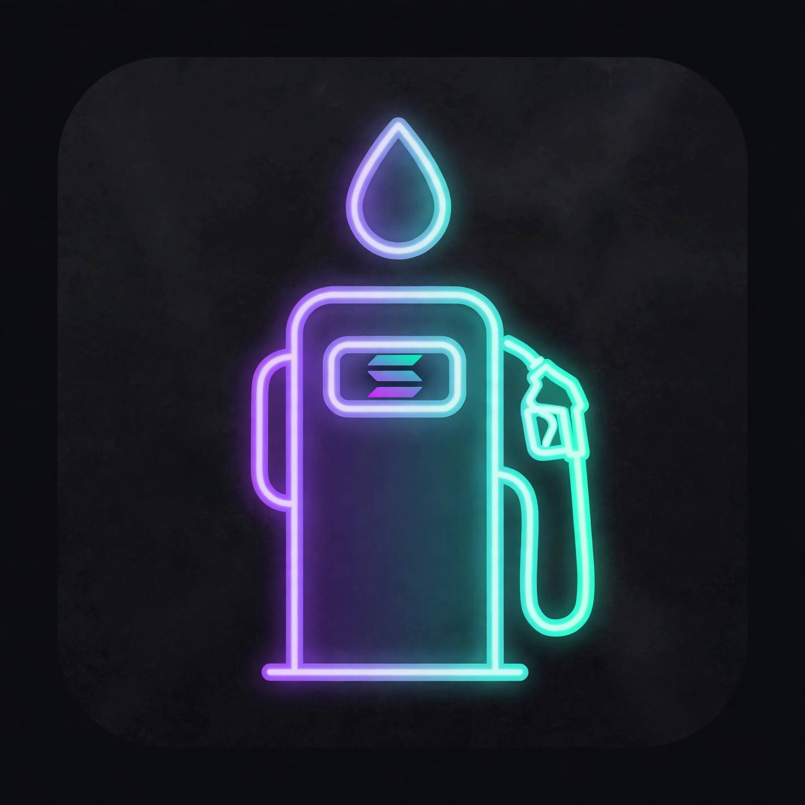

GAS PUMPA
FLEET SOL TOP-UP
GAS PUMPA keeps your wallets topped up with SOL: you choose how much each wallet should hold, it refills the ones that run low, you approve every refill, it never holds your money, and there is no GAS PUMPA token.
What it does
Whales, farmers, and bot operators run fleets of wallets — and lose money when a wallet runs dry mid-operation: failed transactions, missed mints and claims. GAS PUMPA keeps the whole fleet gassed from one tank wallet you control.
Target-level pumping. Set a target (say 0.05 SOL per wallet). A pump tops up only the wallets below target, by exactly the difference — never more, never less. Fleet health reads at a glance: green, low, dead.
Standing Pump. Rules you sign — on a schedule, or whenever a wallet drops below your floor — check on your device and raise a one-tap prompt showing exactly which wallets, how much each, the fee, and the tank balance after. You tap, you sign. Nothing is ever auto-signed.
Built-in ATM. Swap SOL, USDC, and SKR through Jupiter inside the app, so the tank refills without leaving. You sign every swap; GAS PUMPA never holds funds and is not a fiat on-ramp.
Verified before it moves. Your fleet setup is a signed, fingerprinted configuration. Every pump is built from it, checked instruction-by-instruction against it, and simulated with an exact balance check before your wallet ever sees it.
Read this first — pumps are public
A pump is public — anyone can see it, forever. When GAS PUMPA tops up your wallets from one tank wallet, the public record shows the tank, every wallet it paid, and every amount. Anyone who knows even one of those addresses can see that all of them are connected, and that never goes away. GAS PUMPA has no privacy mode and makes no privacy promise. If your wallets must stay unconnected, do not top them up from one tank.
No token
GAS PUMPA has no token. Tokens trading under similar names are not affiliated with GAS PUMPA — including Pumpa (PUMPA), mint Essb69dD51J5SupaqiAkj2FjXQNLFtpjgbCmTcZBpump, and GasPump.fun (GAS), mint EEziWMEorAj9q6VQwtuV615WbNyZhqR2Em5n6vGNpump. Any future token using the GAS PUMPA name is not ours.
SUPPORT
GAS PUMPA is published by Raaru (on-chain: raaru.skr). For support, open an issue on the project's GitHub: github.com/raaruofficial/gaspumpa-app/issues.
Common answers: the app runs entirely on your device — if a balance looks stale, pull Refresh on the fleet screen. A pump that stops mid-way is recorded as PARTIAL in your pump history with the batches that did send; nothing retries silently. Standing Pump prompts appear when you open the app, and about every 15 minutes in the background when the watch is on.
PRIVACY
GAS PUMPA collects no data. There is no account, no analytics, no server of ours, and nothing to sell or share. Your fleet setup, standing rules, and pump history live only on your device and are excluded from cloud backup and device transfer; uninstalling deletes them.
What leaves the device is what the chain itself requires: balance checks go to a public Solana RPC, swaps go to Jupiter, and every pump you sign is a public Solana transaction — permanently visible, as described above. Name lookups you type into the fleet editor (a .sol or .skr name) are resolved once, at entry, through the Solana Name Service resolver.